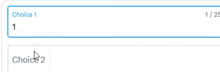

screenshot_0 · full
[2560, 1304] → [2560, 1304] · 保留像素 100.0% · 场景 0


坐标：[0, 0, 2560, 1304] · 原因：first_screenshot
算法版本：experimental_theme_aware_per_step_v2。仅用于预览，生成流程未修改。
返回任务总览 · 查看全部步骤拼图 · 查看算法判断 JSON
左侧为原图预览和选区（绿色：裁剪；蓝色：保留整图），右侧为此算法的输出预览；实验版尚未用于生成。点击图片查看原尺寸；预览自动缩放。像素减少比例不等于 token 减少比例。
[2560, 1304] → [2560, 1304] · 保留像素 100.0% · 场景 0
坐标：[0, 0, 2560, 1304] · 原因：first_screenshot
[2560, 1304] → [2560, 1304] · 保留像素 100.0% · 场景 1
坐标：[0, 0, 2560, 1304] · 原因：large_visual_change
[2560, 1304] → [585, 818] · 保留像素 14.3% · 场景 1
坐标：[752, 121, 1337, 939] · 原因：localized_change
[2560, 1304] → [607, 658] · 保留像素 12.0% · 场景 1
坐标：[981, 123, 1588, 781] · 原因：localized_change
[2560, 1304] → [650, 631] · 保留像素 12.3% · 场景 1
坐标：[954, 165, 1604, 796] · 原因：localized_change
[2560, 1304] → [108, 155] · 保留像素 0.5% · 场景 1
坐标：[1042, 210, 1150, 365] · 原因：localized_change
[2560, 1304] → [454, 150] · 保留像素 2.0% · 场景 1
算法输出预览

坐标：[1042, 190, 1496, 340] · 原因：localized_change
[2560, 1304] → [556, 473] · 保留像素 7.9% · 场景 1
坐标：[1032, 177, 1588, 650] · 原因：localized_change
[2560, 1304] → [1115, 826] · 保留像素 27.6% · 场景 1
坐标：[489, 0, 1604, 826] · 原因：localized_change